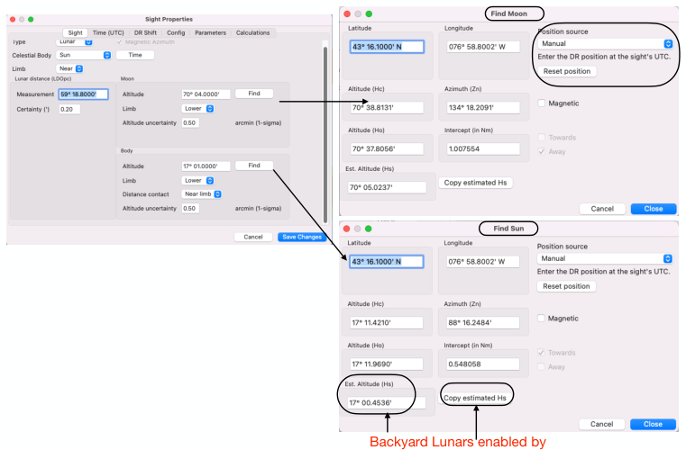

| Previous | Contents | Next |
Lunar distances · Page 46 of 70
Lunar Distance Use Case 1 “Sun-Moon” Aug 18, 2025 11:58 6. Input Lunar Sights into Celestial Navigation Plugin
Find Celestial Body to input Lat/Longitude & for Backyard Lunars
Latitude and Longitude defaults to “Boat Position”. New Feature (v 2.8.x), Position can be grabbed from a Waypoint and other options. This eliminates typing La and Lo. In OCPN “v 5.14” Examples of valid inputs -76 58.8, -76, -76.9812345, -76 58 48 (°-min-sec), -76°58.8’, 76°58.8W, W76 58.8. For Open CPN v 5.12 for Lo, you must identify W or E (a OCPN bug fixed with v 5.14). For La, +/- can be used instead of N/S
 |
| Open illustration at full size |
Est. Altitude (Hs). New Feature (v 2.4.66). Cel Nav estimates an Hs by considering altitude adjustments (IE, Dip, SD/Limb, Refraction, Parallax, Augmentation). It serves three purposes.
1. Validate your sight measurement.
2. Plan your sights by pre-setting sextant index arm and to record sight, over type it.
3. Enables you to do Lunars in the backyard or when you can’t see the horizon. Copy estimated Hs and that’s it.
Press Copy estimated Hs button to copy it into Altitude Sight field. Caution Hs estimate is within +/- 0.2’ altitude from 1.5° to 90. It is not calculated for negative angles or when the body (Hc) is below the horizon.
Est. Altitude and Copy Hs
Est. Altitude (Hs) can be used to preset
sextant
| Previous | Contents | Next |